05.31.2010 15:10
Number of BAGs in a survey
In the case of BAG surveys, I am currently my only customer for using
this interface. If it confuses me, it sure will confuse someone else.
When I zoomed in on a BAG icon, I was never sure (unless I was looking
at something for the 10th time) how many bags would pop out of a
survey and where the survey border was. I've made two changes to try
to clarify things. First, I have changed the survey icons to show the
number of BAGs in a survey. This should reduce the surprise factor
when you zoom into point where it snaps to the view of all the BAGs
The second change is to the border of the survey: it no longer goes away, is a different color, and is slightly higher. It's still challenging when the survey bounding boxes overlap, but I definitely get less lost in situations like those shown here where one survey has 18 BAG files.
Here is the super simple imagemagick bash script to write the circles and numbers to an icon image:
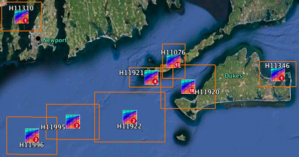
The second change is to the border of the survey: it no longer goes away, is a different color, and is slightly higher. It's still challenging when the survey bounding boxes overlap, but I definitely get less lost in situations like those shown here where one survey has 18 BAG files.
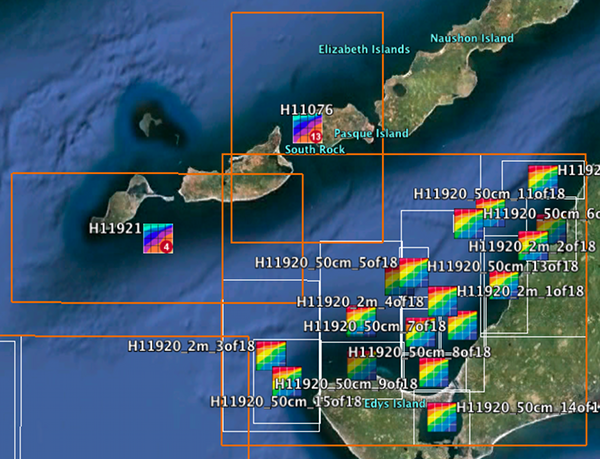
Here is the super simple imagemagick bash script to write the circles and numbers to an icon image:
#!/usr/bin/env bash
in=survey-icon-66x66.png
count=1
while [[ $count -le 9 ]]; do
convert -fill brown -draw "circle 51,51 61,61" -fill white -pointsize 20 -annotate +46+59 $count $in survey-icon-66x66-$count.png
let count=$count+1
done
count=10
while [[ $count -le 30 ]]; do
convert -fill brown -draw "circle 51,51 61,61" -fill white -pointsize 20 -annotate +40+59 $count $in survey-icon-66x66-$count.png
let count=$count+1
done
05.29.2010 17:38
Handling large number of BAGs in a Survey
I'm working back through NOAA's published BAG archive as fast as I
can. In my December 2009 take on things, I had one bounding box and
icon per bag file that I got from NGDC's server. I have 2059 bag
files, but only 406 surveys. I am using an idea I picked up from
Trey's work at NASA Ames. When you are zoomed out, I present an icon from the Survey and
hide all the individual bags. I've created a small database of the
bags, so it is trivial to get the over all bounding box for the
survey. The one feature I am missing that Trey had for his photo
viewer is a count on the icon of the number of bags that are being
hidden. I think that is outside of the scope for the time that I have
(e.g. negative 1 day)
As you zoom in, the Region control in the KML switches the view over to the individual bags. I use the same icon, but inverted
I have also switched my code to use the UTM bounding box. I never saw the tiled bathymetry out of place, but some of the geographic bounding boxes were off by multiple degrees. I am not seeing any more crazy survey bounding boxes in my quick look. Example delta degrees between the Metdata Geographic and UTM coordinate (when projected back to geographic of course):
There is also the possibility of a Caris generated GML export that I just found out about yesterday. Here is an example boundry created by running this gdal command:
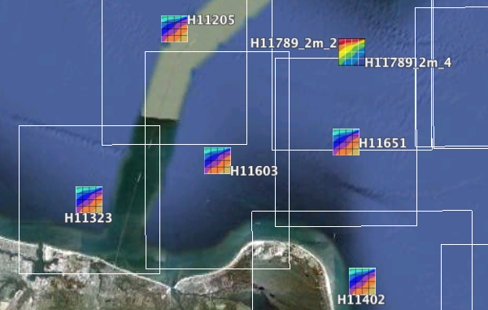
As you zoom in, the Region control in the KML switches the view over to the individual bags. I use the same icon, but inverted
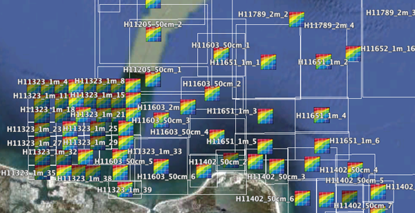
I have also switched my code to use the UTM bounding box. I never saw the tiled bathymetry out of place, but some of the geographic bounding boxes were off by multiple degrees. I am not seeing any more crazy survey bounding boxes in my quick look. Example delta degrees between the Metdata Geographic and UTM coordinate (when projected back to geographic of course):
bag file, deltas x_min y_min x_max y_max H11536_1_of_4 0.9380 -6.5251 0.1306 -7.3478 H11554_1_of_1_BAG 0.2377 -8.0011 -0.5709 -8.7929 H11555_1_of_1 0.1354 -8.1659 -0.6326 -8.9748 H11612_1_of_2 -14.7299 -16.4563 -15.6013 -17.3354Those are the worst ones. The nice thing is that the venders are writing info about their software (not correctly, but there are only a few), so I can noticify the software vendor. It will be critical to create ERRATA sheets, so that we know what kind of bugs are likely to be present in the archived data.
There is also the possibility of a Caris generated GML export that I just found out about yesterday. Here is an example boundry created by running this gdal command:
ogr2ogr -f kml survey.kml caris_survey.gml
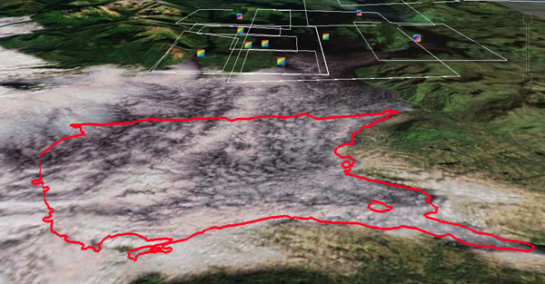
05.29.2010 13:28
handling xml data with namespaces with lxml
I don't know why I never got this before. Perhaps it's because I find
namespace handling overly awkward with the local alias to a large url.
But I've finally used it and it works. I can live with this and stop
being bad... usually, my first pass through an XML dataset is to rip
out the namespaces. Yeah, that's bad practice and I promise to stop
being bad (at least in this little way). First the GML section of the
BAG metadata:
I really like h5py for reading hdf5 files, but it's a bummer that the error messages a little weak and I can't pass in a gzip or bzip2 file for reading.
<?xml version="1.0"?>
<smXML:MD_Metadata
xmlns:smXML="http://metadata.dgiwg.org/smXML"
xmlns:xlink="http://www.w3.org/1999/xlink"
xmlns:xsi="http://www.w3.org/2001/XMLSchema-instance"
xmlns:gml="http://www.opengis.net/gml">
<!-- ... -->
<spatialRepresentationInfo>
<smXML:MD_Georectified>
<cornerPoints>
<gml:Point>
<gml:coordinates decimal="." cs="," ts=" ">427393.74,4085752.56 433314.44,4090295.74</gml:coordinates>
</gml:Point>
</cornerPoints>
</smXML:MD_Georectified>
</spatialRepresentationInfo>
<!-- ... -->
</smXML:MD_Metadata>
Now using xpath to pull these GML UTM coordinates out of the metadata looks like this:
#!/usr/bin/env python
import h5py
from lxml import etree
f = h5py.File(infile_name)
bag_root = f['/BAG_root']
metadata_xml = ''.join(bag_root['metadata'])
root = etree.XML(metadata_xml.replace('smXML:','')) # Me being bad with namespaces
utm_coords = root.xpath('//*/gml:coordinates', namespaces={'gml':"http://www.opengis.net/gml"})[0].text
Now the question come... how do you handle if there are many different URLs that are likely to encode the same info (e.g. KML)? Do I have to create detection code that knows exact matches or can get if the namespace is basically the same?
I really like h5py for reading hdf5 files, but it's a bummer that the error messages a little weak and I can't pass in a gzip or bzip2 file for reading.
05.29.2010 07:00
Science support of Deepwater Horizon
NOAA has just made announcements about some of the support coming in
from the academic world.
This press release mentions both MBARI and UNH: NOAA Research Ship Gordon Gunter Expands Gulf Mission [noaanews]
This press release mentions some of the UNH CRRC's involvement: UNH Coastal Response Research Center, NOAA, EPA and Coast Guard Convene Science Meeting to Study Dispersant Use and Ecosystem Impacts of Dispersed Oil in the Gulf of Mexico [noaanews]
Also, the Flow Rate Group has their estimate out [doi.gov]:
This press release mentions both MBARI and UNH: NOAA Research Ship Gordon Gunter Expands Gulf Mission [noaanews]
... The Gunter will sail to the vicinity of the well head and begin a systematic survey using its 18 and 38 kHz sonar to define the shape and extent of the underwater plume. University of New Hampshire Joint Hydrographic Center scientists onboard will explore the feasibility of using mid-water mapping sonar to image the submerged plume in combination with new software that could result in 3-D images of what is happening underneath the surface. If potential plumes are identified, the Gunter will deploy a unique autonomous underwater vehicle provided by the Monterey Bay Aquarium Research Institute. Called the Gulper, the vehicle will take discrete water samples at various depths to allow precise characterization of any oil, dispersants, or other substances in the plume. ...For those not familar with the MBARI AUV with its "Gulper", check out this video:
This press release mentions some of the UNH CRRC's involvement: UNH Coastal Response Research Center, NOAA, EPA and Coast Guard Convene Science Meeting to Study Dispersant Use and Ecosystem Impacts of Dispersed Oil in the Gulf of Mexico [noaanews]
Also, the Flow Rate Group has their estimate out [doi.gov]:
Based on three separate methodologies, outlined below, the independent analysis of the Flow Rate Technical Group has determined that the overall best initial estimate for the lower and upper boundaries of flow rates of oil is in the range of 12,000 and 19,000 barrels per day. ... On May 25, 2010, at approximately 17:30 CDT, the RITT logged oil collection at a rate of 8,000 barrels of oil per day, as measured by a meter whose calibration was verified by a third-party. Based on observations of the riser, the team estimated that at least 10% of the flow was not being captured by the riser at the time oil collection was logged, increasing the estimate of total flow to 8,800 barrels of oil per day. Factoring in the flow from the kink in the riser, the RITTI Team calculated that the lower bound estimate of the total oil flow is at least 11,000 barrels of oil per day, depending on whether the flow through the kink is primarily gas or oil. ...
05.28.2010 09:00
Time Machine excludes
Managing backups is always a tricky thing. I really miss having AFS
as my primary home filesystem. I don't think it would work with my
current laptop situation, but it was so nice to have the ability to go
get accidentally deleted files from yesterday's backup without having
to talk to an admin. I created the equivalent at SIO with a 2nd
Solaris 8 server doing rsync 2x per week and mounting the copy back
read only. I've been missing that until I got time machine up again.
We have corporate offsite backups with EMC Networker (when it isn't
being grouchy), but I could neither see the backup status nor easily
grab or diff a file from EMC's system. If the tape was already
offsite, it becomes a major hassle. Also, we really want to know what
changes when Networker breaks. So, I setup a time machine drive to
backup my desktop. The problem is that I have a 0.5TB USB drive
backing up a 2TB internal drive. What to do? Well, networker really
can not handle large churn in files, so I have already worked with our
IT guy Will to have our Macs setup with /nobackup as a place for
temporary files to go without triggering backup. I typically have .2
to 1.5 TB of data at any one time in that area and that can turn over
day-to-day as I process data. So, I just added that and the fink
areas to the nobackup area. I am thinking of putting /sw32 back into
the backup pool as that removes the /sw32/var areas that contain
things like PostgreSQL data. I definitely want that backed up. From
System Preferences, select Time Machine and then Options.
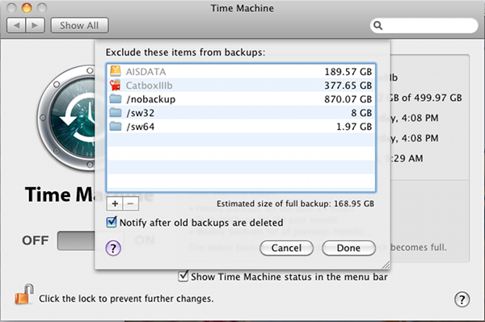
05.28.2010 06:31
Video tour of the UDel Visualization lab
Art Trembanis
has setup a very nice visualization and computation space in his
building. I haven't been down there since before the construction
started. Art really did a bang up job creating a flexible space that
will really support research for years to come. He has added a number
of features on my wish list that I have not had time to implement.
Although, I have yet to see anyone do the one feature that I am really
dying to have in an environment like this: ceiling mounted projectors
that point down so that the floor can also be a work space. We
then need a user interface that understands gesters that use the
location of shadows on the floor to interact. I should have just gone
and done that when I was at the SOC in Tucson with the huge empty
warehouse space so that we could have walked on a 1:1 surface of Mars.
05.27.2010 16:52
Aerial view of top kill operations
I can see this in AIS and it looked crowded. Now I can see it in this
USCG overflight:
05.27.2010 08:54
SQLite Manager in Firefox
Thanks to Monica's post on SQLite Manager, Free
SQLite Manager for Mac OS, I am now a happy user of sqlite-manager.
Note that this tool should run on any platform if you have firefox.
And thanks to Myche back in early 2004 for pushing me into trying
sqlite for my thesis work.
First install it by opening Firefox and Going to Tools -> Add-ons -> Get Add-ons. Search on sqlite and install sqlite manager. After firefox restarts, byou are good to go. Then It's pretty easy to get a table up and going, especially if you don't do this kind of thing very often.
Then viewing data is a snap:
First install it by opening Firefox and Going to Tools -> Add-ons -> Get Add-ons. Search on sqlite and install sqlite manager. After firefox restarts, byou are good to go. Then It's pretty easy to get a table up and going, especially if you don't do this kind of thing very often.
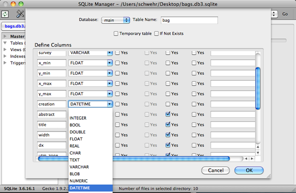
Then viewing data is a snap:
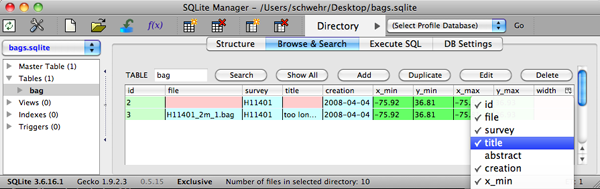
05.26.2010 13:14
Phoenix landing on Mars
Before today, I hadn't see this video by Chelsea from when Phoenix
landing on Mars. I was around the corner controlling the 50 ft screen
from on Mac desktop plus a video switcher on the serial port with
Shigeru shipping out a number of video feeds from JPL. The room shown in the video
is the Science Operations Center (SOC) in Tucson, AZ. The folks that I'm showing up on the screen were at JPL.
05.25.2010 18:57
Roland on the NBP in Antarctica
I've never been able to work in a polar region during the dark season.
Roland and Colin are on the ice hardened NSF ship Palmer tracking
whales. Roland has set up a nice SLR camera on a pan-tilt unit up on
the top of the Palmer and has a linux program capturing and creating
mosaics to observe the ice coverage in the area. The Palmer does not
have a full internet feed, so these images do not do justice to the
quality of the images returned by the camera. The observers who sit
next to the setup apparently refer to it as "The Droid".
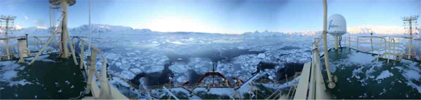
05.25.2010 14:44
libais 0.5 - good enough for first production use
This code is good enough that it is being used in an operational
environment. It's handling 60KB/sec with more than 8000 vessels. It
is by no means perfect. Suggestions and comments are more than
welcome. I would like to do more with class inheritance, for example
decoding the message type, MMSI, and repeat indicator that is all
messages, but the C++ BitSet class prevents that. If only the dynamic
bitset type would migrate from Boost to the C++ standard library.
libais-0.5.tar.bz2 (still only 31K)
libais-0.5.tar.bz2 (still only 31K)
- docs: Include ESR's AIVDM.txt with permission
- docs: MID / DAC / MMSI prefixes now listed in mid.csv
- docs: dac/fi list
- docs: More notes for message designers
- Added msg 8 - 1:11 - IMO Met/Hydro
- Added AIS msg 9 - SAR Position
- nais2py.py: Added try except wrapper on ProcessingThread. Also try to track one off error found on call with timestamp converting to float
- send_data.py: new file for testing
- nais2py.py: LineQueue now has a custom drop handler for too many lines waiting. Could be better.
- nais2py.py: Added threaded network interface. Seeing the network side overwhelm the processing thread
- nais2py.py: Added response_class handling to VesselNames. Can be preloaded. Allows periodic name dump
- nais2py.py: Added ENABLE_DB flag to try runs without database execute commands. Faster debugging
05.25.2010 09:58
ERMA and the Deepwater Horizon Incident
Now that I've seen the link elsewhere, I will point to it. ERMA is
being used for the Deepwater Horizon indicent response. I can't go
into the details and there is much of the system that is not visible
public interface.
IOOS Deepwater Horizon Oil Spill Page points to https://gomex.erma.unh.edu/
Other things just recently made public... There are two releated Congressional Research Reports (CRS) on OpenCRS: Oil Spills in U.S. Coastal Waters: Background, Governance, and Issues for Congress and U.S. Offshore Oil and Gas Resources: Prospects and Processes (dated April 26 and includes a reference to Deepwater Horizon). The next Random Hacks of Kindness (warning... slashdot article). NASA Ames/CMU did some really cool stuff at last years event... Carnegie Mellon Team Wins First Prize at Random Hacks of Kindness
In somewhat distantly related news (e.g. oil and gas + environmental protection), Neptune LNG Deepwater Port Expects First Cargo Delivery in August
IOOS Deepwater Horizon Oil Spill Page points to https://gomex.erma.unh.edu/
Other things just recently made public... There are two releated Congressional Research Reports (CRS) on OpenCRS: Oil Spills in U.S. Coastal Waters: Background, Governance, and Issues for Congress and U.S. Offshore Oil and Gas Resources: Prospects and Processes (dated April 26 and includes a reference to Deepwater Horizon). The next Random Hacks of Kindness (warning... slashdot article). NASA Ames/CMU did some really cool stuff at last years event... Carnegie Mellon Team Wins First Prize at Random Hacks of Kindness
In somewhat distantly related news (e.g. oil and gas + environmental protection), Neptune LNG Deepwater Port Expects First Cargo Delivery in August
05.25.2010 09:08
ORBCOM SAIS data - my first view
I was running some tests on my desktop and braught up my latest view
of my realtime_ais database for something else... this is the first
time I made a plot where ORBCOM S-AIS (Satellite AIS) was in the mix.
My new code can easily deal with the full rate undecimated NAIS feed
(63KB/s with a load of about 2% on the machine). This completely
threw me off what I was trying to test. You can clearly see a good
portion of the outline of Africa. Plot made with QGIS and libais-0.5
with the data going through PostgreSQL 8.4.4 with PostGIS 1.5.1.
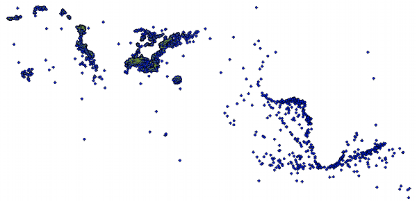
05.21.2010 08:55
Noaadata 0.44 released
It has been almost 10 months since I released an update to noaadata.
I'm now putting more energy into libais, but noaadata is a reference
to how I developed a lot of my processing techniques and it is much
easier to try things out in noaadata and BitVector. This really is
the release where I realized that my XML language is not currently up
to the task. It has been a while since I've heard from the European
group that is exploring the same idea using FreeAIS. Also, I've added
links to FreeAIS, gpsd, noaadata, and libais to the wikipedia
AIS page. Thanks to ESR, the state of non-paywalled documentation
for AIS has greatly improved. His AIVDM.txt is currently the
best non-code and open documentation of the NMEA side of AIS. Eric and
I have had some really good discussion over IRC on #gpsd that have
helped to illuminate some of the most confusing aspects of AIS
messages. Many issues still remain, so please join in the
conversation. For example, why do messages 22 and 23 have huge spare
blocks when it is important to keep messages short to decrease the
chance of noise on the VHF channel from corrupting the message?
noaadata-py-0.44.tar.bz2
noaadata-py-0.44.tar.bz2
- Started working on the new and separate libais C++ library for AIS with C-Python bridge for Deepwater Horizon
- Allow ais_bin_msgs.py to print out the corresponding AIVDM line
- Msgs 6 and 8 decode dac and fi
- Msg 21 fixed for ATONS to handle two new flags
- Msg 21 handcoded can now deal with the extended name
- ZNT NMEA string for NTP time quality
- ais_normalize can handle data w/out timestamps
- Add first C++ AIS code - ais_filter_by_mmsi
- In ais.binary, fixed a 2's complement bug for the lowest negative number... this was bad!
- Msg 7 had the spare as 1 bit when it should have been 2. Creating a handcoded version to deal with shorter messages
- This version corresponds to working on libais-0.1 to libais-0.2
- New INSTALL file base on report from gemiller on irc:gpsd
- NEW FILES: ais_msg_21_handcoded.py ais_msg_7_handcoded.py imo_001_11_handcoded.py
- NEW FILES: template.bash nmea_error.py znt.py ais_filter_by_mmsi.cxx ais_bin_msgs.py
- NEW FILES: ais_decimate_traffic.py ais_distance.py ais_info.py ais_nmea_find_matches.py
- NEW FILES: ais_nmea_uptime2.py ais_nmea_uscg_timeshift.py ais_pg_grid_transits.py
- NEW FILES: find_missing_logs.py logger_handlers.py serial-logger2.py
05.21.2010 08:27
Python decorators
I still don't feel like I have a handle on python
decorators. The seem pretty interesting, but I have no sense of
when and how in my code to use them. Here is an interesting example
that actually seems to make sense to me: Capture Stack Trace
Decorator. I've wrapped it in an example program that works with
both python 2.6 and 3.x (hence the from __future__ ... yeah time
travel). If you call this function and it barfs, your program keeps
running and leaves you a stack trace. Sometimes, you just can't
afford to have a program fail. It's time to log the error and keep
moving forward.
#!/usr/bin/env python
from __future__ import print_function
import traceback
import sys
def catch(func):
'Catches any exception and prints a stack trace.'
def wrapper(*args,**kwargs):
try:
return func(*args,**kwargs)
except:
print ('Caught exception')
traceback.print_exc()
return wrapper
@catch
def face_palm():
int("a")
face_palm()
print ('still running')
05.21.2010 07:41
GPS 2F-SV1 launch today
Hopefully today, the new 2F-2V1 GPS satellite will be launched: Next-generation GPS satellite ready for launch and ULA Postpones GPS 2F Launch till today. Look for IIF on the wikipedia page Global Positioning System. Also check out the M-code and L5 sections of GPS modernization on wikipedia.
05.20.2010 12:05
2009 CCOM / JHC annual report
The 2009 CCOM/JHC annual report has now been officially released. If
you want an overview of what we have been up to, this is the place to
go. It doesn't cover everything, but it definitely is the best place
to find out about us. This is the first year that the report includes
a link to a YouTube video. Page 55 links to my video of Aldebaran II
showing the right whale zones off of Boston from received AIS
messages. There are far more figures in this report compared to prior
years, which I think is a very good thing. But I am definitely biased as I
had a hand in about 15 of the images.
2009_ccom_progressReport.pdf
2009_ccom_progressReport.pdf
05.20.2010 09:42
Experiences with an Apple RAID card
My newest desktop is a 3.32 GHz quad core xeon with 8 GB of ram and an
Apple RAID card with two 1 TB disks. We decided to put the machine in
RAID 0 configuration because it is being backed up by EMC Networker
(which is a pretty lame and expensive backup program... sorry EMC, but
your product is a steaming pile) for offsites and a Time Machine USB
external disk for hourly backups. Therefore, I feel like it is pretty
safe to run in RAID 0. Generally, RAID 0 is a bad idea because any
disk failing brings the system down and with more than one hard disks
the probability of catastrophy increases. The RAID card seems
generally okay, but has been responsible for several kernel panics and
prevents me from dual booting windows. Today I came in to find this
dialog on the screen:
Going to the RAID utility, you can see that it already did the battery conditioning, so it didn't give me a choice if to postpone. So don't go putting a RAID card in anything that doesn't have great backups, a good UPS and decent power. This is troubling in NH where my office often looses power for long enought to run out of UPS backup. It's also interesting to see that an external firewire RAID drive shows up in the utility. Although, I have no idea what "State JBOD" means for the external. While this machine is fast, I can't say that the RAID card is really worth it. Perhaps if I was doing more video editing, I might see more benefit from the card.
UPDATE: Less pointed out that JBOD means "Just a Bunch Of Disks".
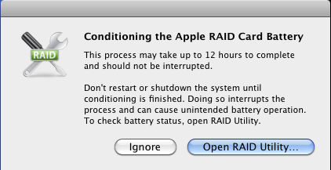
Going to the RAID utility, you can see that it already did the battery conditioning, so it didn't give me a choice if to postpone. So don't go putting a RAID card in anything that doesn't have great backups, a good UPS and decent power. This is troubling in NH where my office often looses power for long enought to run out of UPS backup. It's also interesting to see that an external firewire RAID drive shows up in the utility. Although, I have no idea what "State JBOD" means for the external. While this machine is fast, I can't say that the RAID card is really worth it. Perhaps if I was doing more video editing, I might see more benefit from the card.
UPDATE: Less pointed out that JBOD means "Just a Bunch Of Disks".
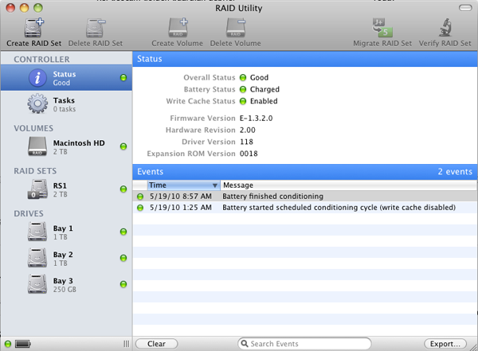
05.18.2010 14:23
AIS in Qgis
I just tweaked my new table design for realtime AIS updates in PostGIS
to add WITH OIDS so I can view the database in Qgis. I like it! This
is just a couple minutes of a full US feed. My new design puts only a
very small load on PostgreSQL and the python job is using about %10 of
one core to keep up with the entire US (~650 NMEA strings per second).
Most of my system load is coming from an unrelated wget pulling data
from a NOAA server across the country at 1.8MB/s.
Some fun statistics from a 4 day trial run on the US: I have seen 8600 unique MMSI's from class A and class B transmitters and 4700 names from MMSIs greater than 200,000,000. And yes, there are many many vessels that seem to have miss a digit when configuring their AIS units. For example:
Processes: 119 total, 3 running, 1 stuck, 115 sleeping, 402 threads 14:10:00 Load Avg: 0.31, 0.23, 0.21 CPU usage: 1.54% user, 0.66% sys, 97.78% idle SharedLibs: 6656K resident, 7072K data, 0B linkedit. PID COMMAND %CPU TIME #TH #WQ #POR #MREG RPRVT RSHRD RSIZE VPRVT VSIZE PGRP PPID STATE UID FAULTS 3670- python2.6 12.2 01:03.75 3/1 0 40 156 13M+ 1672K 15M+ 90M 663M 3670 234 running 501 4536+ 3671- postgres 1.0 00:07.86 1 0 9 63 988K 13M 7756K+ 1212K 604M 3671 43481 sleeping 252 2098+ 3632- Qgis 0.2 00:13.95 2 1 101- 512- 41M- 56M 76M- 123M- 1120M- 3632 173 sleeping 501 42320 ...Here is my current PostGIS setup:
CREATE TABLE vessel_pos (
mmsi INTEGER PRIMARY KEY,
cog INTEGER,
sog REAL,
time_stamp TIMESTAMP WITH TIME ZONE DEFAULT now(),
nav_status VARCHAR(30) -- convert the code to a string for presentation
) WITH OIDS;
SELECT AddGeometryColumn('vessel_pos','pos',4326,'POINT',2);
SELECT AddGeometryColumn('vessel_pos','track',4326,'LINESTRING',2);
-- CREATE INDEX vessel_pos_pkey ON vessel_pos(mmsi); -- created automatically if done through psql
CREATE INDEX vessel_pos_ts_idx ON vessel_pos(time_stamp);
CREATE TABLE vessel_name (
mmsi INTEGER PRIMARY KEY,
name VARCHAR(25), -- only need 20
type_and_cargo INTEGER,
response_class INTEGER -- 0 do not display differently. 1 == response vessel
);
-- CREATE INDEX vessel_name_pkey ON vessel_name(mmsi); -- created automatically
CREATE INDEX vessel_name_rc_idx ON vessel_name(response_class);
Here is the resulting image. You can see the basic outline of the US (and the fact that some vessels are using the same MMSI).
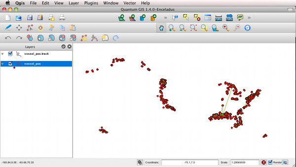
Some fun statistics from a 4 day trial run on the US: I have seen 8600 unique MMSI's from class A and class B transmitters and 4700 names from MMSIs greater than 200,000,000. And yes, there are many many vessels that seem to have miss a digit when configuring their AIS units. For example:
mmsi = 36898800 name: ALTAIRALTAIR is missing a digit somewhere. Perhaps a "0" on the right. It is really frustrating to have so many ships with bad MMSIs.
05.17.2010 17:53
Oil suspended below the surface in the gulf of mexico
Storries about oil hanging out in the water column (e.g. Submerged
oil plumes suggest gulf spill is worse than BP claims [UK
Guardian]) remind me of the oceanographic term Nepheloid
layer. I don't know if the term really covers oil/water mixes,
but the idea is the saye. Depending on density, liquids will find
depends where they match the density of the surrounding liquids. In
the geology world, we ususually think of suspended sediment causing
the change in desity of water.
05.17.2010 17:43
Django 1.2 released
Today, the Django project release version 1.2. I know they have been
working hard to make this a great release. I will try to update the
fink package later this week. If you have tried this new release,
please drop me an email letting me know how it went and if you ran
into any issues.
Django 1.2 on PyPi and Django 1.2 released. Be sure to check out the release notes. There are few backward incompatible changes.
Django 1.2 on PyPi and Django 1.2 released. Be sure to check out the release notes. There are few backward incompatible changes.
05.16.2010 06:14
Lamprey from the Cocheco River
Yesterday, we got a tour
of the the Dover fish ladder. Here is the host showing off a Lamprey from the
holding tank at the top of the ladder. Unlike for the Great Lakes,
Lamprey are native to this river. This guy has to come out every day
to take fish from the holding tank at the top and get them into the
river. This is one of the few ladders where the fish cannot get to
the river on their own. I didn't know until yesterday, that there is a small hydro-electric generator at the falls and that is why there is the wood riser at the top of the dam.
The mill buildings: A Yarn to Follow: The Dover Cotton Factory 1812-1821 [dovernh.org]
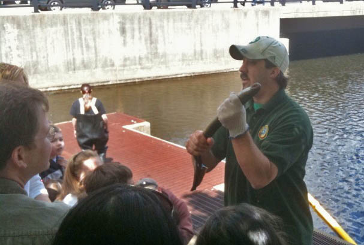
The mill buildings: A Yarn to Follow: The Dover Cotton Factory 1812-1821 [dovernh.org]
05.14.2010 14:47
Radar water level
We've got a radar based water level measurement system that we are
about to try out in the wave tank. Every type of water level
measurement device has it's trade offs. It will be interesting to see
how this unit performs.
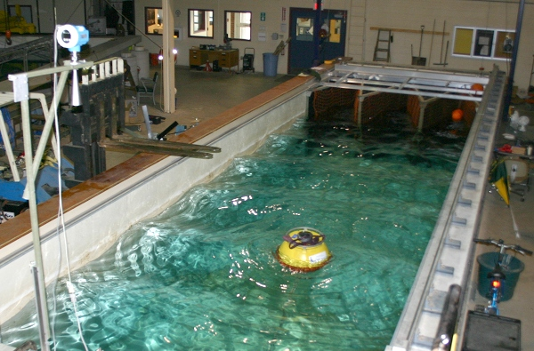
05.13.2010 09:42
Open request for visualization
I have a great mini project for anyone who is willing to volunteer a
bit of their time. The USCG has been releasing
timelines of the Deepwater Horizon oil spill. It would be
fantastic to have this as a SIMILE Timeline
visualization. Any takers? This time, I've save a copy locally of
the timeline in case the USCG breaks the link to the timeline again or
wipes the content (which they did for the last URL).
05.08.2010 22:03
When you know you have a memory leak...
python(9483,0xa0ae34e0) malloc: *** mmap(size=262144) failed (error code=12) *** error: can't allocate region *** set a breakpoint in malloc_error_break to debug python(9483,0xa0ae34e0) malloc: *** mmap(size=262144) failed (error code=12) *** error: can't allocate region *** set a breakpoint in malloc_error_break to debug Traceback (most recent call last): File "./ais2pg.py", line 233, inThis probably comes from me missing something with python's reference counting. Clearly switching from pure python brings with it some risksmatch = uscg_ais_nmea_regex.search(line).groupdict() python(9483,0xa0ae34e0) malloc: *** mmap(size=262144) failed (error code=12) *** error: can't allocate region *** set a breakpoint in malloc_error_break to debug MemoryError

05.08.2010 18:28
Fast AIS name database creation and highlighting of bad AIS data
We really need a system in the US that helps mariners get their AIS
units configured correctly. Using an incorrect MMSI is dangerous.
Your vessel may appear to change names on other peoples displays and
if you call for help, the USCG may go to the location of the other
vessel(s) with that MMSI. I'm redoing some code to cache vessel names
to be easier on the database and as a result my code is highlighting
some invalid MMSI's. The number after the name is the type and cargo field.
In environments such as the Deepwater Horizon incident in the Gulf of Mexico, it is especially important to have your information correct to aid in the coordination of the response.
UPDATING: 100000000 SYMMETRY 147 -> CDA 64 UPDATING: 101010101 JEAN RIBAULT 80 -> RIP 148 UPDATING: 101010101 RIP 148 -> JEAN RIBAULT 80 UPDATING: 111111111 0 -> SOLO TU 243 UPDATING: 111111111 CABLE FERRY ICW130 16 -> ISLAND PROGRESS 51 UPDATING: 111111111 GALLANT LADY 19 -> 0 UPDATING: 111111111 GALLANT LADY 19 -> GRENADIER 33 UPDATING: 111111111 GRENADIER 33 -> 0 UPDATING: 111111111 ISLAND PROGRESS 51 -> GALLANT LADY 19 UPDATING: 111111111 ISLAND PROGRESS 51 -> GRENADIER 33 UPDATING: 111111111 SOLO TU 243 -> CABLE FERRY ICW130 16 UPDATING: 111111111 SOLO TU 243 -> ISLAND PROGRESS 51 UPDATING: 123456789 IRONWOOD 35 -> MV PATHFINDER USACE 104 UPDATING: 123456789 ISLAND PILOT 51 -> IRONWOOD 35 UPDATING: 123456789 MV PATHFINDER USACE 104 -> ISLAND PILOT 51 UPDATING: 319892000 GIGA-BYTE 145 -> SEA FEVER 80 UPDATING: 319892000 SEA FEVER 80 -> GIGA-BYTE 145 UPDATING: 366759130 WSF PUYALLUP 49 -> PUYALLUP WSF 86 UPDATING: 366773060 ELWHA 197 -> ELWHA 83 UPDATING: 367178330 SHELL AUGER NE 129 -> SHELL AUGER SW 129 UPDATING: 367178330 SHELL AUGER SW 129 -> SHELL AUGER NE 129 UPDATING: 367341450 ENCHILADA 224 -> ENCHILADA/SHELL RIG 224 UPDATING: 367341450 ENCHILADA/SHELL RIG 224 -> ENCHILADA 224 USELESS: mmsi = 0 name: USELESS: mmsi = 0 name: LADY BROWARD USELESS: mmsi = 0 name: P301 USELESS: mmsi = 0 name: P\B SANDY HOOK USELESS: mmsi = 0 name: SUBMARINE USELESS: mmsi = 1 name: USELESS: mmsi = 1 name: BIL HOLMAN DREDGE USELESS: mmsi = 1 name: SANLORENZ0 108 USELESS: mmsi = 1193046 name: ANGIE M BRUSCO USELESS: mmsi = 1193046 name: AUDREY USELESS: mmsi = 1193046 name: HARDHEAD USELESS: mmsi = 1193046 name: JAY GENE USELESS: mmsi = 1193046 name: MAJESTIC USELESS: mmsi = 1193046 name: MUSE USELESS: mmsi = 1193046 name: NAUTICAST USELESS: mmsi = 1193046 name: NIKOLA USELESS: mmsi = 1193046 name: NORWEGIAN QUEENAll mariners should take a few minutes and make sure that they have the correct MMSI and name for their vessel. Ask a buddy or neighboring ship to see what they are receiving for you. All ships should have a number that is 201,000,000 or higher. The first 3 digits on the left are a DAC, basically a country code, where the vessel is registered. These are refered to by ITU as Maritime Identification Digits. Some countries have more than one, e.g. the United States has 338, 366, 367, 368, 369, and even more (there is one marked as Alaska).
In environments such as the Deepwater Horizon incident in the Gulf of Mexico, it is especially important to have your information correct to aid in the coordination of the response.
05.08.2010 09:42
A look inside the incident command center for Deepwater Horizon
This video has the incident command center in the background. Looks
not to different from the room that was using for the Northeast 2010 SONS drill back in March.
I have a few Delicious bookmarks for thngs related to the spill: http://delicious.com/goatbar/deepwaterhorizon.
I have a few Delicious bookmarks for thngs related to the spill: http://delicious.com/goatbar/deepwaterhorizon.
05.07.2010 14:33
Postgresql insert or update
If anyone has a better suggestion on this, please let me know. I am
trying to update a table or insert a new entry if it doesn't exist and
I would like to do this as fast as possible. I found a really nice
example of code that works fine when talking to postgresql over psql,
but does not work inside of a psycopg2 connection. Turns out that I got
introuble by trying the update first. If I try it with the insert first,
I am then able to talk to the database only once per record.
#!/usr/bin/env python
import psycopg2
cx = psycopg2.connect("dbname='ais_test'")
cu = cx.cursor()
for i in range(5):
print i
cu.execute('''BEGIN;
SAVEPOINT sp1;
INSERT INTO vessel_name VALUES(12345678, 'RUST BUCKET1', 67);
ROLLBACK TO sp1;
UPDATE vessel_name SET name='RUST BUCKET', type_and_cargo=66 WHERE mmsi = 123456789;
COMMIT;''')
cx.commit()
05.05.2010 14:49
Handling errors in C++ and passing them back to python
The bridge between C++ and Python really isn't very fun. I'm trying
to keep my structure simple. I have never made friends with
exceptions in C++ and now is not the time to try them. I have an enum
of status/error codes defined in ais.h and here is an example of what happens
when I get a bad character in a NMEA payload. Just the act of starting
to write the error handling cause me to rethink how I go about it.
Let me walk through decoding a Class A position message.
Let me walk through decoding a Class A position message.
PyObject *
ais1_2_3_to_pydict(const char *nmea_payload) {
assert(nmea_payload);
Ais1_2_3 msg(nmea_payload);
if (msg.had_error()) {
PyErr_Format(ais_py_exception, "Ais123: %s", AIS_STATUS_STRINGS[msg.get_error()]);
return 0;
}
I create an position object (AIS message 1, 2, or 3) by passing in the
NMEA payload. If in the process of building the instance the code
detects a problem, it will set the status to be something other than
AIS_OK and return. I have a method "had_error()" to check for
something being off. If it is, I use the get_error() call to return
the status code and use that to construct and ais.decode.error. The
exception type was created in the module init by ais_py_exception =
PyErr_NewException("ais.decode.error", 0, 0);. Calling PyErr_Format
tells python that an error occured and I return a NULL pointer since the
object is no good. And yes, there are quite a few bad objects floating
around in the 300G of compressed AIS log files that I have saved.
01: Ais1_2_3::Ais1_2_3(const char *nmea_payload) {
02: assert(nmea_payload);
03:
04: init();
05:
06: if (strlen(nmea_payload) != 168/6) {
07: status = AIS_ERR_BAD_BIT_COUNT;
08: return;
09: }
10:
11: std::bitset<168> bs; // 1 slot
12: status = aivdm_to_bits(bs, nmea_payload);
13: if (had_error()) return;
In the constructor above, I call the parent class init() function and
then start trying to pull apart the payload. Lines 6-9 make sure that
the string has the right number of characters (all position messages
come back as 28 characters). If not, it sets the error code and
bails out of the constructor.
01: template<size_t T>
02: AIS_STATUS aivdm_to_bits(std::bitset<T> &bits, const char *nmea_payload) {
03: assert (nmea_payload);
04: assert (strlen(nmea_payload) <= T/6 );
05: for (size_t char_idx=0; nmea_payload[char_idx] != '\0' && char_idx < T/6; char_idx++) {
06: int c = int(nmea_payload[char_idx]);
07:
08: if ( c<48 or c>119 or (c>=88 and c<=95) )
09: return AIS_ERR_BAD_NMEA_CHR;
10:
11: const std::bitset<6> bs_for_char = nmea_ord[ c ];
12: for (size_t offset=0; offset < 6 ; offset++)
13: bits[char_idx*6 + offset] = bs_for_char[offset];
14: }
15: return AIS_OK;
16: }
Handling the bit decoding is done outside of the class, so there is no
status member to be set. I handle the status through the
return code rather than a non-const argument (which was my first
strategy). The above template handles the conversion for AIS 6 bit
NMEA characters to a bitset. At line 8, I check to make sure that
each character is one of the allowed characters. If not, I return an
AIS status code representing the error. There is no point to
continuing on with the decoding when the message is known to be
garbage. At line 15, I know that everything decoded okay, so I return AIS_OK.
05.05.2010 07:20
Google's Crisis Response oil spill page
Finally something I can talk about 14 days into this incident. I
didn't have anything to do with the creation of Google's page.
Thank's to Pete and his coworkers for creating this page on the
Deepwater Horizon incident:
Google crisis response - Gulf of Mexico Oil Spill
There is also a lot of good stuff on gCaptain: e.g. Deepwater Horizon - Transocean Oil Rig Fire
Google crisis response - Gulf of Mexico Oil Spill
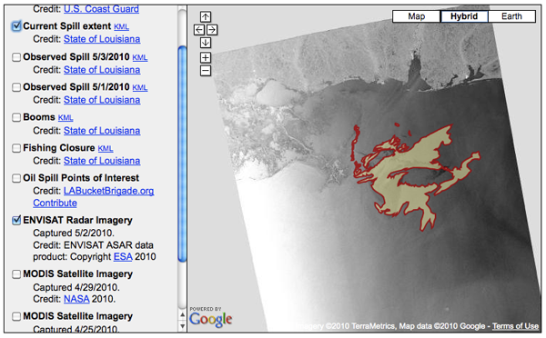
There is also a lot of good stuff on gCaptain: e.g. Deepwater Horizon - Transocean Oil Rig Fire
05.03.2010 19:23
Supporting Python 2.6 and 3.1 for a C extension/module
I just managed to make my python extension in libais work with both
python 2.6 and python 3. I followed the well hidden guide on the
python web page: Porting Extension
Modules to 3.0. It basically boils down to these two changes for me:
- PyString_FromString -> PyUnicode_FromString
- PyInt_FromLong -> PyLong_FromLong
05.03.2010 15:21
libais 0.1 - a C++ library for decoding AIS and a python wrapper
In the spirit of open source, I have made my first release of my
libais source code... version 0.1. The code really isn't usable yet,
but it can decode messages 1-5. The decoding happens in C++ and I've
written a C++ wrapper for python that given a message NMEA payload, is
able to return a dictionary back to python. I expect this to be about
50x faster than my noaadata code. Why another library for AIS? I
like the code that ESR did for GPSD, but I wanted:
- A C++ interface with a class heirarchy. Why polute GPSD with C++?
- I am uncomfortable with unions and I am not smart enough to program with more than just simple unions (libais uses one small union for signed integer decoding)
- Being able to decode AIS in the same process
- I really wanted to use the C++ bitset type to handle the bit level stuff
wget http://vislab-ccom.unh.edu/~schwehr/software/libais/downloads/libais-0.1.tar.bz2
tar xf libais-0.1.tar.bz2
cd libais-0.1
make python
export PYTHONPATH=build/lib.*
ipython
import ais
ais.decode('15PIIv7P00D5i9HNn2Q3G?wB0t0I')
ais.decode('402u=TiuaA000r5UJ`H4`?7000S:')
ais.decode('55NBjP01mtGIL@CW;SM<D60P5Ld000000000000P0`<3557l0<50@kk@K5h@00000000000')
The return dictionaries look like this:
{'cog': 86.0,
'id': 1,
'mmsi': 369515000,
'nav_status': 7,
'position_accuracy': 0,
'raim': False,
'received_stations': 25,
'repeat_indicator': 0,
'rot': -53.547782897949219,
'rot_over_range': True,
'sog': 0.0,
'spare': 0,
'special_manoeuvre': 0,
'timestamp': 41,
'true_heading': 511,
'x': -166.51214599609375,
'y': 53.904434204101562}
{'day': 2,
'fix_type': 7,
'hour': 0,
'id': 4,
'minute': 0,
'mmsi': 3100051,
'month': 5,
'position_accuracy': 1,
'raim': True,
'repeat_indicator': 0,
'second': 0,
'slot_offset': 2250,
'spare': 0,
'x': -82.666099548339844,
'y': 42.069435119628906,
'year': 2010}
{'ais_version': 0,
'callsign': 'WDD9287',
'destination': 'TACOMA,WA@@@@@@@@@@@',
'dim_a': 5,
'dim_b': 12,
'dim_c': 3,
'dim_d': 5,
'draught': 4,
'dte': 0,
'eta_day': 15,
'eta_minute': 0,
'eta_month': 4,
'fix_type': 1,
'id': 5,
'imo_num': 7729526,
'mmsi': 367309440,
'name': 'SEA HAWK@@@@@@@@@@@@',
'repeat_indicator': 0,
'spare': 0,
'type_and_cargo': 80}